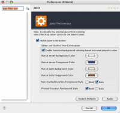

Contents |
What
The Jaxer Server font preferences can be changed in Aptana Studio.
How
Disable internal Jaxer server
Select the "Stop server" action in the Servers View.
Getting to Jaxer Preferences
- From the Window menu, select Preferences...
- On the Preferences tree on the left, expand Aptana.
- Under Aptana click Jaxer
Preferences
  Jaxer preferences
Jaxer preferences
{kind=link}
You can change font colors:
- Run at Server Background color: This is the background color for script tags specified as runat="server".
- Run at Server Foreground color: This is the foreground color for script tags specified as runat="server".
- Run at Both Background color: This is the background color for script tags specified as runat="both".
- Run at Both Foreground color: This is the foreground color for script tags specified as runat="both".
And the formatting style for function styles:
- Non-cached Function foreground style. The options are bold or italic or both. Defaults to italic.
- Proxied Function foreground style. The options are bold or italic or both. Defaults to bold.